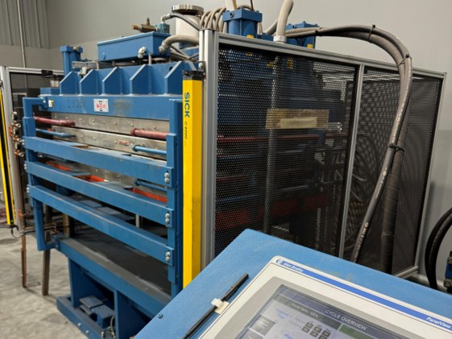
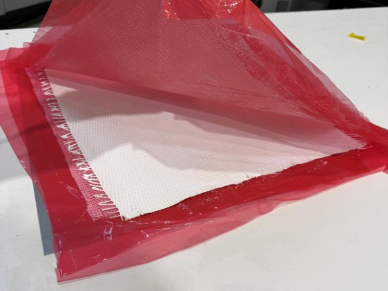

Engineering Intern · Aerodine Composites · Summer 2026
Ceramic Matrix Composite Research, Production, and Testing


The problem
Aerodine's core business is fiberglass and carbon fiber. To diversify and expand the customer base, the company accepted an order for a structural component that had to survive continuous service above 1000 °C in a steam environment, a condition that rules out every polymer matrix the shop had ever run. There was no existing procedure, no qualified material system, and no in-house history with ceramics to fall back on.
Building the process
I started with a materials survey to find a matrix and reinforcement pairing that could hold up under those conditions, working from the oxide ceramic composite literature and supplier data. From there I worked on a small team to develop the process end to end. The route we landed on was a wet manual layup of a ceramic slurry onto fabric, warm pressed and polymerized into thin sheets, then fired.
Slurry formulation and particle packing
Getting the matrix into the fiber tows was the first real problem. Alongside my team, I researched particle packing work with alumina to establish how much alcohol the slurry needed. The slurry required a delicate balance to load sufficient matrix while maintaining low enough viscosity for fiber infiltration.
We evaluated infiltration routes that skip the polymer binder entirely and chose not to pursue them. They would have removed the burnout step, but they did not fit the equipment the shop already had or the cycle time the order needed. Keeping the polymer route meant accepting burnout as a constraint and designing the heating schedule around it, which turned out to be the cheaper and timely problem to solve.
Binder burnout and sintering
Firing had two jobs that pull against each other. The polymer binder has to leave the part, and the ceramic has to densify. Doing both in one cycle meant a variable heating schedule rather than a single ramp. Sintering ran in the mid-1200 °C range while polymerization occured well before the 700 °C range. We also set the parts on kiln furniture rather than flat on the shelf so oxygen could reach the whole surface and burnout products had a path out during the cycle, which is easy to overlook and shows up immediately in the finished part.
Testing
Testing was a generally straightforward process. Using Archimedes' Pinciple and vacuum-infiltration with water, the porosity of the final product could be verified. The flexural strength was conducted in a three point test and only needed to fit the customer's desired specifications and tolerances.
Skills practiced
- Materials selection against a defined service environment
- Ceramic slurry formulation and particle packing
- Wet layup, vacuum bagging, and warm press consolidation
- Binder burnout and sintering schedule development
- Design of experiments on coupled process variables
- Test plan development for flexural strength and porosity characterization
- Technical literature research and supplier evaluation
Characterization was straightforward. Porosity came from Archimedes' principle with vacuum infiltration in water. Flexural strength was measured in three-point bending and checked against the customer's spec and tolerance.